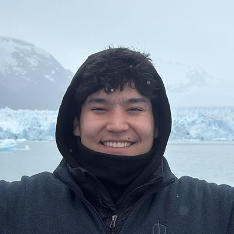
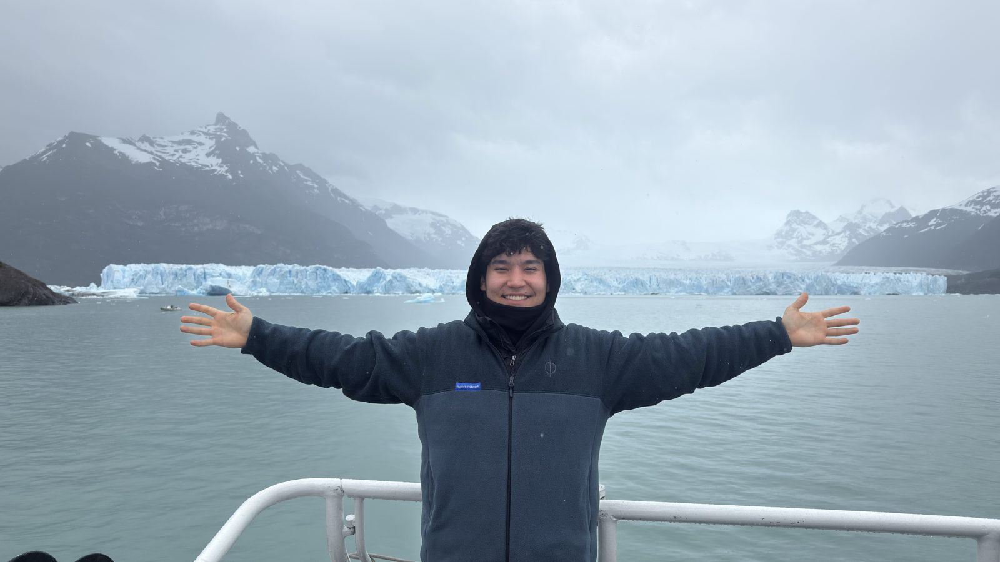

Alzhan Armanuly
21 years old.
24 countries.
Security engineer turned founder · Kazakh, Russian, English
Now:
- Came to Shenzhen on a ShanHaiWoo scholarship to explore AI, hardware and the factories here
- Building my own startup
- Drafting a video series: nobody is ever ready, and everything starts with a tiny step
AI-nativeEvery day starts and ends in my own second brain: a team of AI agents that plans my day, drafts my messages and keeps every task.
the story so far
-
16 · 2021
First job in crypto
Started as a copywriter in crypto while still at school. Taught myself Python on the side, built bots that minted and listed NFTs, then bot farms for crypto games, and sold them.
-
17 · 2022
Moved abroad for uni
Left Kazakhstan to study software engineering at METU in Northern Cyprus. Took a free internship at a security firm to learn the craft.
-
18 · 2023
Full-time security auditor
Got a full-time job auditing smart contracts while still at uni. Became a top 2 auditor in private contests, finding bugs in protocols holding $12B.
-
19 · 2024
Bangkok in the middle of midterms
Found a critical bug a day before a protocol went live. Flew from Cyprus to Devcon Bangkok in the middle of exams, flew 21 hours back, sat the exam at 8 a.m. and scored 80 against an average of 40. Soon after, I dropped out to join Immunefi.
-
20 · 2025
On the front line of crypto security
At the biggest bug bounty platform in web3 I judged thousands of bug reports for protocols holding $180B, and joined war rooms during live attacks, helping secure $100M+. Won ETHGlobal, spoke at Devconnect in Buenos Aires, and worked from 18 countries in one year.
-
21 · 2026 · now
Building my own startup
Spoke on the EthCC main stage in Cannes, then left to build something of my own. Won a ShanHaiWoo scholarship and came to Shenzhen for AI and hardware: visiting factories, building with AI glasses, and drafting my first video series.
Worked on bugs for Aave · Chainlink · Lido · LayerZero · Compound · Optimism · Ethena · 1inch · Gearbox
talks
- EthCC[9] · Cannes2026
- Devconnect side events · Buenos Aires2025
- Ethereum Foundation–sponsored event · Black Ice hackerspace2025
- KazHackStan2024
countries · lived in 4

sailing · captain licence · 7 regattas in 3 countries
A new crew every race. Under stress you see who people really are. Next: crossing the Atlantic.